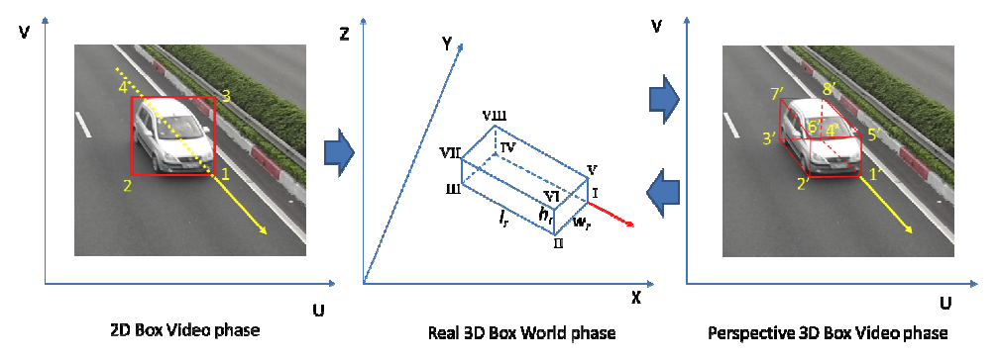
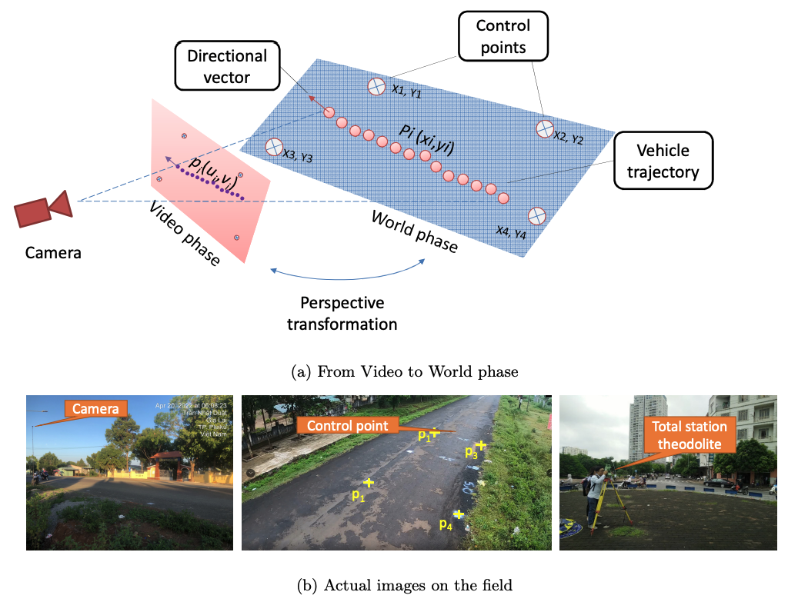
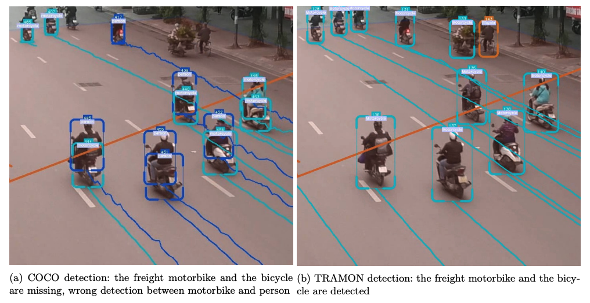

Data-driven cities: bringing together AI and Agent-based Models
Minh Kieu
minh.kieu@auckland.ac.nz
University of Auckland
These slides:
https://bit.ly/MKres
Motivation

In New Zealand alone:
Light vehicles contribute to 70% of transport emissions
62% transport GHG emissions increase since 1990
256 deaths/year due to harmful emissions from transport
The focus of my research
Improving transport resilience during and after natural disasters
Reducing the transport carbon footprints
About me
- From 2020: Lecturer/Senior Lecturer, University of Auckland, NZ
- 2018-2020: Research Fellow, University of Leeds, UK
- 2016-2018: Research Scientist, Data61, CSIRO, Australia
- 2011-2016: PhD and Research Associate at Queensland University of Technology, Australia
Urban Transport Modelling for Sustainable Well-being in Hanoi (2020-2022) Bristish Academy -- Co-PI
Motorbikes are associated with many traffic issues in Hanoi
A potential motorbike ban in the CBD of Hanoi
How do people react to that?
We survey 30,000 respondents, and obtained the census data for 500,000 Hanoians
Individual perceptions to important transport policies
Findings from Hanoi-UTM project


Hanoi-UTM project: What's next
Exploratory Data analytics paper: Under review
Upscaling the Travel survey data using Census data: Spatial Propensity Score Matching method (Working paper)
Nature Scientific Data paper: Sharing of data (Working paper)
Synthetic data generation
Synthetic Big Data of Human Activities -- SynAc (2020-2022): PI
Funded by FRDF Funding, University of Auckland
Wirelessly Powered Transport Infrastructure for a Low-carbon Future (2021-2026) MBIE Endeavour Programme -- Co-PI
Charging of Electric Vehicles: Wired or Wireless
Wireless: Static or Dynamic
5-year research programme between Transport, Electrical, Science and Bussiness School at the University of Auckland
In collaboration with ASPIRE (5-year NSF Research programme): Utah State, Purdue, Colorado, Virginia Tech, etc https://aspire.usu.edu/
Dynamic Wireless Power Transfer for Electric Vehicles

Location of dynamic charging lanes
Optimise the locations of static and dynamic wireless charging infrastructure
Evaluate different DWPT technologies
Traffic control/management for DWPT
Human behaviours: how drivers will react to DWPT?
Incentivise drivers to reduce traffic congestion or traffic crashes: combination with congestion charging?
Issues with current Agent-Based Modelling
Uncertainty: there is no systematic mechanism to incorporate new data into agent-based models
The reality is dynamic: Non-linear models predict near future well, but diverge over time.
The reality is stochastic: No set of parameters would perfectly explain the real system.
2. Modellers' bias: Similar to any other models
The true explanatory power of agent-based models (ABMs) lie in the flexibility and ease with which these behavior rules can be encapsulated within agents.
Then ideally, these rules should come from the causal factors of social phenomenon. Yet this is rarely done.
1. Deals with uncertainty: Data Assimilation for Agent-Based Models

Improve estimates of the true system state by combining noisy, real-world observations and model estimates of the system state
DUST: Data Assimilation for Agent-Based Models.

Example 1
Bus Simulation with a Particle Filter
Context: simulate bus routes in real time
We have GPS bus positions, but to make good term forecasts we need to be able to infer other factors
Number of people waiting at bus stops
Number of people on the bus
Surrounding traffic levels
Etc.
Aim: test a particle filter as the means of assimilating real-time GPS positions into a model.
Particle Filter

Create N realisations of the model ('particles')
Run each particle forward in time until you receive some new data
Compare the particles to the observation and:
Weight each particle depending on how close it is to the observations
Resample the population of particles using the weights (good particles are kept, bad ones disappear)
Repeat
Bus Simulation
Bus Simulation with a Particle Filter
Example 1
Bus Simulation with a Particle Filter
LM Kieu, N Malleson, A Heppenstall (2020) Dealing with uncertainty in agent-based models for short-term predictions Royal Society open science 7 (1), 191074
LM Kieu, D Ngoduy, N Malleson, E Chung (2019) A stochastic schedule-following simulation model of bus routes , Transportmetrica B: Transport Dynamics 7 (1), 1588-1610
Example 2
Crowd Simulation with a Particle Filter

Context: simulate a crowd in real time
What methods can we use to assimilate data?
How much data do we need?
Track every individual?
Track some individuals?
Just aggregate counts (e.g. number of people passing a footfall camera)
Case study: a simple, hypothetical train station (Station Sim)
Crowd Simulation with a Particle Filter

Example 2: Crowd Simulation with a Particle Filter
M Kieu, H Nguyen, J A Ward, N Malleson (2022) Towards Real-Time Predictions using Emulators of Agent-Based Models Journal of Simulation
Patrica Ternes, Jonathan A Ward, Alison Heppenstall, Vijay Kumar, Le-Minh Kieu, Nick Malleson (2021) Data assimilation and agent-based modelling: towards the incorporation of categorical agent parameters, Open Research Europe
R Clay, JA Ward, P Ternes, LM Kieu, N Malleson (2021) Real-time agent-based crowd simulation with the reversible jump unscented kalman filter Simulation Modelling Practice and Theory 113, 102386
N Malleson, K Minors, LM Kieu, JA Ward, AA West, A HeppenstallSimulating Crowds in Real Time with Agent-Based Modelling and a Particle Filter Journal of Artificial Societies and Social Simulation 23 ((3) 3)
Towards Real-time traffic monitoring with computer vision: PI
Loop detectors: High cost of maintainance and installation
Traffic monitoring with computer vision
How can we use the existing CCTV system for AI-based traffic monitoring?

Traffic analysis from NZTA's traffic CCTV cameras
Object detection algorithm YOLO: You only look once

State-of-the-art object detection algorithm
Annotated image dataset: Microsoft COCO

84 different objects, but not specialised in transportation
Research challenges
Focus on traffic vehicle objects
Process a large number of objects in real-time
Identify the actual locations of those objects on a real-world dataset
Enables us to estimate speed, flow, density
Our "sensors" are more durable and replacable
Multiple cameras are already operated
The system relies more on software rather than hardware
Extendable: e.g. incident/anomalies detection
On-going work 1: Identify the actual locations of those objects on a real-world dataset
https://www.youtube.com/watch?v=8IJcoYMlR4YHow do we find the real-world location ?
Key idea: We use a vector of motion to identify the vehicle heading direction, and then use that to draw a 3d bounding box
Now with the vehicle 3d bounding box developed, we only need to compare its location to a set of 4 control points
Vietnam case study
Left: existing algorithms, Right: our proposed system

Left: existing algorithms, Right: our proposed system
Performance on a Vietnam case study
On-going work 2: Pedestrians/active transport systems
Take the coordinate conversion challenge to the next level!
Issues with current Agent-Based Modelling
Uncertainty: there is no systematic mechanism to incorporate new data into agent-based models
The reality is dynamic: Non-linear models predict near future well, but diverge over time.
The reality is stochastic: No set of parameters would perfectly explain the real system.
2. Modellers' bias: Similar to any other models
The true explanatory power of agent-based models (ABMs) lie in the flexibility and ease with which these behavior rules can be encapsulated within agents.
Then ideally, these rules should come from the causal factors of social phenomenon. Yet this is rarely done.
Simulation model: hand-crafted rules -> parameters calibration

Idea: May be it's time to go beyond parameter calibrations/inference
2. A "Level 0" modelling approach: Inverse Generative Social Science or Genetic Programming
Issues with current development of ABMs:
Modellers' bias
Complex human behaviours
Fail to offer a theoretical foundation
IGSS: Use AI to craft agents' behaviours from data


Genetic programming
Benefits
- No modellers' bias
- Causal inference: Not for prediction but for explanability
Potential issues
- "Bloating": AI come up with a very long set of rules
- Scarce search problem, requires large amount of data
IP3 QuakeCoRE - A Resilient Aotearoa New Zealand Transport System
Data-driven behavioural modelling
Case study: Auckland CBD